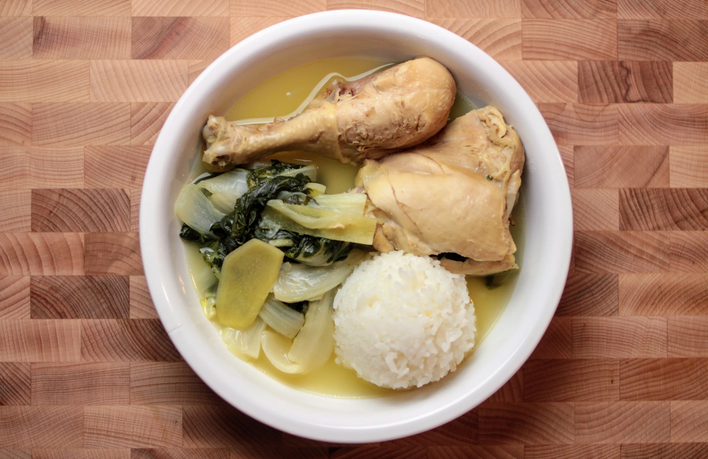

Tinolang Manok/Chicken Tinola

Description
A very healthy chicken and spinach ginger-based soup. My favorite dish of
all time, my grandmother would cook this for me often. Cooking and eating
it reminds me of her.
Ingredients
- 1 whole chicken, cut into serving pieces
- 36 oz. rice washing, or water
- 1/2 pc. green papaya, cut into wedges
- 1 cup hot pepper leaves or malunggay leaves or spinach
- 1 tbsp. garlic, minced
- 1 medium onion, chopped
- 1 thumb ginger, cut into strips
- 2 tbsp. fish sauce
- 1 pc. Knorr chicken cube
- 1/4 tsp. ground black pepper or whole black peppercorns
Cooking Steps
- Sauté the garlic, onion, and ginger.
- Put in the chicken and cook until color turns light brown.
-
Add the fish sauce and Knorr chicken cube. Stir. Pour rice washing or
water into the cooking pot. Let boil. Cover the pot and simmer for 45
minutes. Note: add more water if needed.
-
Add green papaya and whole peppercorns (if used). Cook for 5 minutes.
-
Add the hot pepper leaves/malunggay leaves or spinach. Stir and cook for
1 minute.
-
Season with ground black pepper. Note you can also add more fish sauce
or salt to taste.
-
Transfer to a serving bowl. Serve hot with a cup of warm steamed white
rice. Share and enjoy!
Back to Main Page